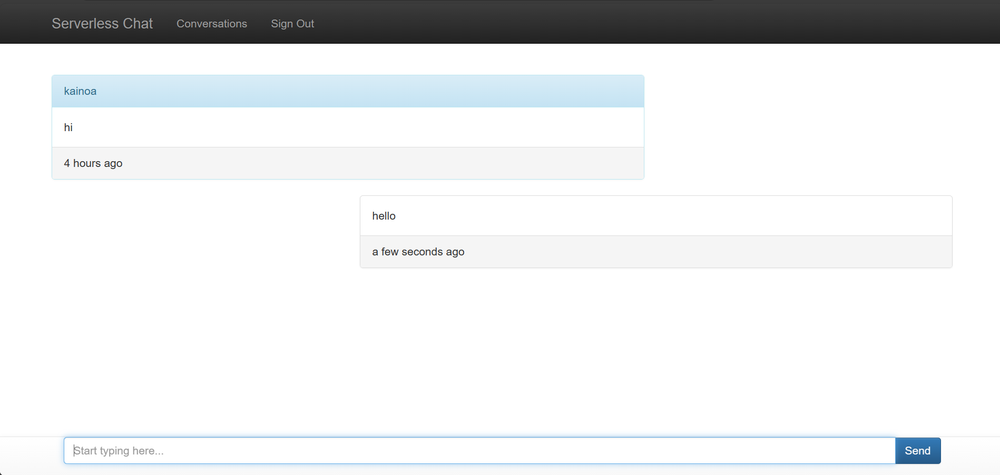
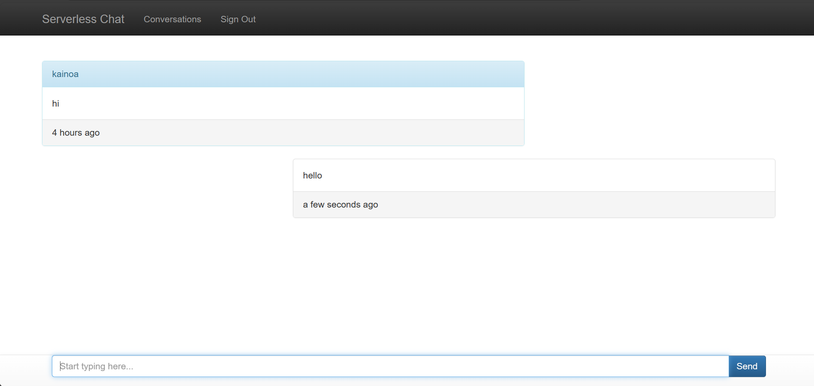
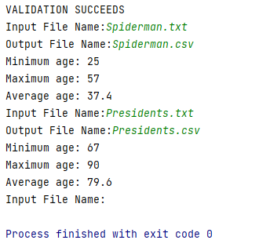
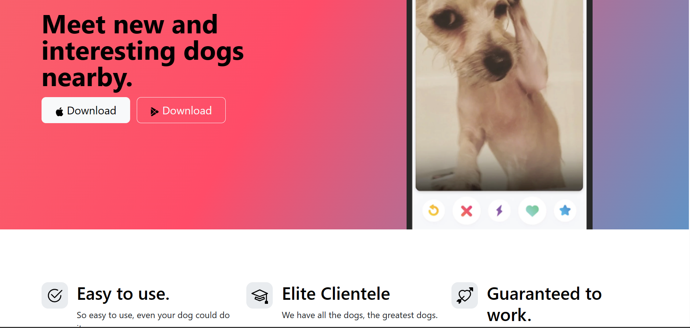
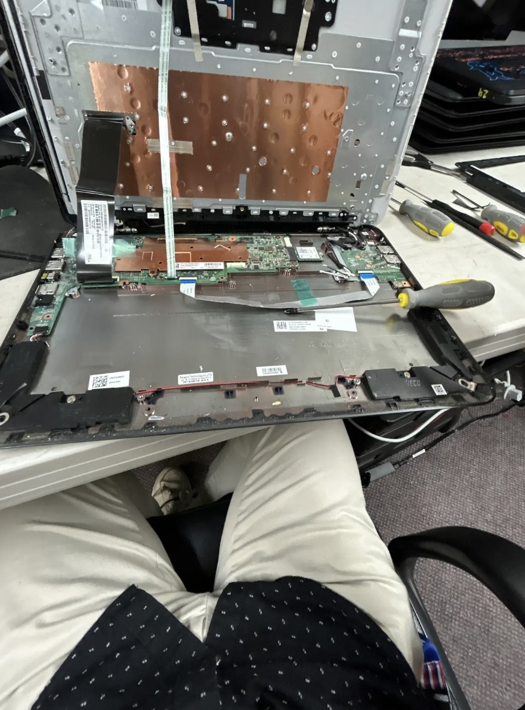
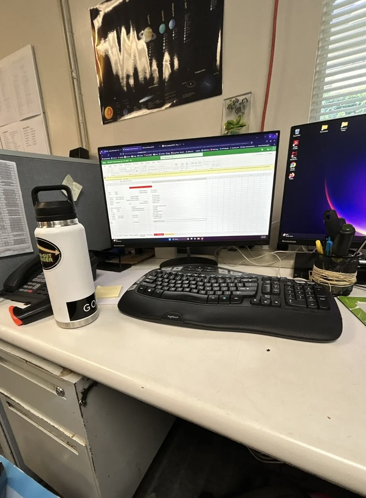

My name is Christopher Aqui but I go by my middle name Kainoa. I was born in Hawai'i raised on
the island of O'ahu. I am a junior majoring in Computer Science with a minor in Data Analytics at Seattle Pacific University.
My passion lies in leveraging my tech skills to drive positive change and make a meaningful impact on the world.
 

Built a chat application entirely with AWS services, and no stand-alone servers at all.
Architected and designed serverless applications. Served static resources to browsers using AWS's S3 (Simple Storage Service). Used Javascript to dynamically modify web pages as well as managed permissions and access policies using IAM which means Identity and Access Management. I was able to manipulate and vend data in the cloud using AWS Lambda. Then, I used CORS to manage client-side security in serverless apps
Store and retrieve data with DynamoDB.
I modeled API's and created SDK's with API Gateway. Created a user login system with Cognito.
I was able to speed up my web app with a CloudFront CDN.
Developed a math web application on AWS, utilizing services like Amplify, Lambda, IAM, API Gateway,
and DynamoDB. Crafted the initial web page structure, deployed it with AWS Amplify for web accessibility,
and implemented math functionality through a Python Lambda function. Established seamless front-end to back-end
communication via a REST API using API Gateway, ensuring data persistence in DynamoDB. Enhanced the client-side
experience by invoking the API Gateway endpoint from the Amplify-hosted index.html page. Implemented continuous
improvement with AWS Amplify for immediate updates on the hosted web page, showcasing the application's computational capabilities and efficient storage.

Developed a C++ program for file processing with the goal of reading a "people file" in JSON format and writing
it out to a file in CSV format. The program also determines and displays the minimum, maximum, and average ages
of the people in the file. Utilized JSON (JavaScript Object Notation) for representing attribute-value pairs
related to individuals, including first name, last name, age, height, and nationality. The program reads JSON-formatted
input, converts it to CSV, and produces a CSV file. Additionally, the program handles special cases, such as blank
lines or files that cannot be opened for reading, providing error messages and restarting the loop when necessary.
Good programming practices were followed, including appropriate comments, indentation, meaningful variable names, and
adherence to identifiers convention. The code successfully passed unit tests, validated file existence and format,
calculated age statistics, and demonstrated robust file processing with the ability to handle various scenarios as specified in the assignment.

Designed a vibrant and user-friendly front-end for a whimsical Tinder-inspired website for dogs called TinDog. The index.html features a gradient background and utilizes Bootstrap for responsiveness. The title section introduces the site with a catchy tagline and prompts users to download the app for Apple and Google devices.
The features section highlights key attributes, creatively represented with icons, emphasizing TinDog's ease of use, elite clientele, and a guarantee of success in finding the perfect match for dogs.
The testimonial section adds authenticity with a quote from a satisfied user named Pebbles, accompanied by an adorable dog image. Logos from renowned publications enhance TinDog's credibility.
The pricing section presents three plans for dogs – Chihuahua, Labrador, and Mastiff, each with varying features and pricing. Users can sign up for free or choose premium plans.
The footer provides essential links, and copyright information adds a professional touch. In summary, TinDog is a visually appealing and engaging platform, offering a delightful experience for dog owners seeking companionship for their furry friends.

I played a pivotal role in the successful resolution of over 50 customer service
requests. This involved a comprehensive approach to diagnosing and repairing both
laptops and desktops, showcasing my technical prowess in addressing a diverse range of issues.
One of my key contributions was in the realm of system optimization, where I demonstrated proficiency
in evaluating and improving interfaces between hardware and software systems. This involved a keen understanding
of the intricate interplay between different components, ensuring seamless functionality and enhancing overall
system performance. Working within a collaborative and skilled team, I actively participated in the troubleshooting and
repair of various computer hardware issues. This experience not only honed my technical skills but also highlighted my effective
problem-solving abilities and adeptness at working cohesively in a team environment. The fast-paced nature of the internship allowed
me to develop resilience and adaptability, crucial qualities in the ever-evolving field of technology.

I actively engaged in a multifaceted IT support role, addressing and resolving various technical challenges. One of my primary responsibilities
involved the identification and resolution of technical issues pertaining to projectors, monitors, desktops, and other hardware components.
This hands-on experience allowed me to develop a keen troubleshooting mindset and enhance my technical proficiency in diagnosing and resolving
hardware-related issues. Working collaboratively within a dynamic two-person team involved a systematic approach to ensure the seamless integration
of software solutions, contributing to the overall efficiency and functionality of the school's IT infrastructure. The collaborative nature of the team
allowed for effective knowledge sharing and streamlined problem-solving, fostering a conducive learning environment. Throughout the internship, I actively
engaged with the latest technologies and best practices in the field of IT. This included staying updated on emerging trends, implementing security protocols,
and adhering to industry standards. This internship not only provided practical insights into IT operations within an educational setting but also reinforced
my commitment to delivering reliable and effective IT solutions.